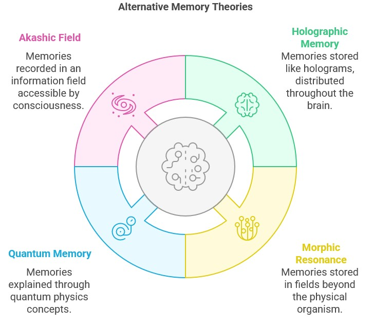

"Before I formed you in the womb I knew you, before you were born I set you apart." — Jeremiah 1:5
How can people remember past lives if memories are stored exclusively in the brain? How can near-death experiencers recall events that occurred when their brains showed no activity? These questions strike at the heart of our understanding of consciousness and challenge the materialist assumption that memory is solely a function of neural activity.
The conventional neuroscientific model treats memories as physical traces in the brain—encoded in synaptic connections, neural pathways, and molecular structures. Yet mounting evidence suggests that memory extends beyond physical brain function, pointing to a non-local aspect of consciousness that transcends the limitations of the physical body.
Jesus used this metaphor to describe spiritual reality—invisible yet real, beyond our ability to confine or fully comprehend. His description applies remarkably well to the non-local aspects of consciousness that research is now revealing.
One of the most striking phenomena challenging the brain-based memory model is terminal lucidity—the unexpected return of clear consciousness, memory, and cognition in patients with severe brain damage or dementia shortly before death.
Dr. Michael Nahm has documented cases where patients with advanced Alzheimer's disease, whose brains had deteriorated to the point where memory should have been neurologically impossible, suddenly recognized family members, carried on coherent conversations, and recalled details from their lives—sometimes just hours or minutes before death.
These cases suggest that memories aren't lost but become inaccessible due to brain damage—implying that they may exist in a field beyond the physical brain.
Several lines of evidence point to memory existing beyond brain function:
1. Memories from Near Death Experiences
People who are clinically dead—flat EEG, no measurable brain activity—sometimes return with crystal clear memories of that blackout period. Cardiac arrest patients in Dr. Sam Parnia's AWARE studies, for instance, reported verified observations from their resuscitations that should have been impossible.
Anna Morales flat lined for six minutes. While doctors shocked her heart, she "floated" above the crash cart and later described the exact defibrillator setting (200 joules), a nurse dropping a metal clamp, and a cartoon sticker on the anesthesiologist's goggles. CCTV and medical logs confirmed every detail, even though Anna's brain was clinically dark.
2. Transplant Memory
Heart and organ transplant recipients sometimes wake up with new cravings, talents, or vivid memories that trace back to their donors. Dr. Gary Schwartz at the University of Arizona has catalogued dozens of cases suggesting that cells carry more than just biochemistry.
Teenager Kiera Johnson despised vegetables and couldn't play piano—until she received the heart of classical pianist Miles Carter. Weeks after surgery she craved Miles's favorite tomato basil soup and began playing Chopin's Nocturne Op. 9 No. 2 perfectly by ear, astonishing her family and Miles's parents alike.
3. Veridical Past Life Memories
Children sometimes speak of former lives with facts that can be verified yet are unavailable through normal means, hinting that memory may leap the gap between incarnations.
Denver toddler Liam Nguyen drew a "golden roof house by a hooked river" and said he'd been a Burmese monk named Than Htoo. Shown photos, he instantly chose Yangon's Shwedagon Pagoda—unknown to his American family. A Burmese student quizzed Liam in Burmese; he answered correctly. Records revealed a novice monk named Than Htoo who drowned in that very river bend in 2004.
4. Savant Abilities
In acquired savant syndrome, a head injury or neurological event unlocks extraordinary skills—math, art, music—that the person never studied, challenging the notion that all knowledge must be learned and stored neuron by neuron.
Construction foreman Marcus Reed fell from a ladder, suffered a concussion, and suddenly played concert level jazz piano though he'd never taken a lesson. Neurologists recorded his performances and confirmed the rarity of such overnight mastery: the music, Marcus says, "was just waiting" for his fingers to find it.
These models align more closely with spiritual understandings of consciousness than with materialistic neuroscience. They suggest that while the brain is necessary for accessing memories in ordinary states, it acts more as a receiver or filter than as the ultimate storage medium.
Jesus' teachings about pre-existence and divine knowledge support this expanded view of memory. When he prayed, "Father, glorify me in your presence with the glory I had with you before the world began" (John 17:5), he referenced memories from before his physical incarnation—memories that existed beyond his current brain.
This passage can be interpreted as referring to accessing deeper knowledge beyond ordinary consciousness—insights from a field of awareness that transcends the limitations of the physical brain.
The implications of non-local memory are profound. If memories aren't confined to the brain, then:
1. Consciousness exists independently of the brain - The brain may be more of a transceiver than a generator of consciousness.
2. Death doesn't erase who we are - Our memories, personality, and identity continue beyond physical death.
3. We have access to wisdom beyond our current lifetime - Intuition and spiritual insight can be drawing on a larger field of memory and knowledge.
4. We are connected to a broader consciousness - Our individual awareness is part of a larger consciousness field.
These concepts don't negate the importance of the brain. In our physical existence, the brain is crucial for accessing and expressing consciousness in the material world. But it appears to be more like a sophisticated transceiver—receiving, filtering, and transmitting consciousness—rather than the source of consciousness itself.
Jesus taught that we have access to a wisdom and knowledge beyond our ordinary thinking. "But when he, the Spirit of truth, comes, he will guide you into all the truth" (John 16:13). This guidance from beyond ordinary consciousness may be our connection to the larger field of awareness and memory that transcends the physical brain.
Understanding memory as transcending the brain opens new possibilities for spiritual growth. It suggests that meditation, prayer, and contemplative practices may allow us to access deeper levels of knowledge and wisdom beyond our current lifetime's experiences.
This perspective also offers hope to those dealing with brain diseases like Alzheimer's—suggesting that the core person is not lost but temporarily inaccessible due to the brain's condition.
The evidence for memory beyond brain function reinforces what the previous chapters have shown: consciousness is not confined to the physical body. It transcends the boundaries of both space (as in NDEs) and time (as in reincarnation memories). This expanded understanding of consciousness aligns with Jesus' teachings about our spiritual nature and eternal identity.
In the next section, we'll explore what these discoveries mean for our understanding of who we truly are—moving beyond the limited identity of the physical body and personality to recognize our higher, divine nature.